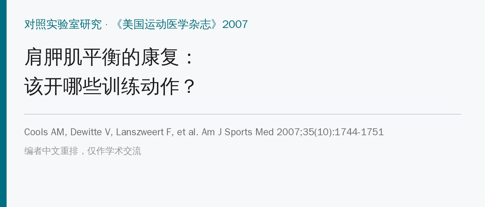
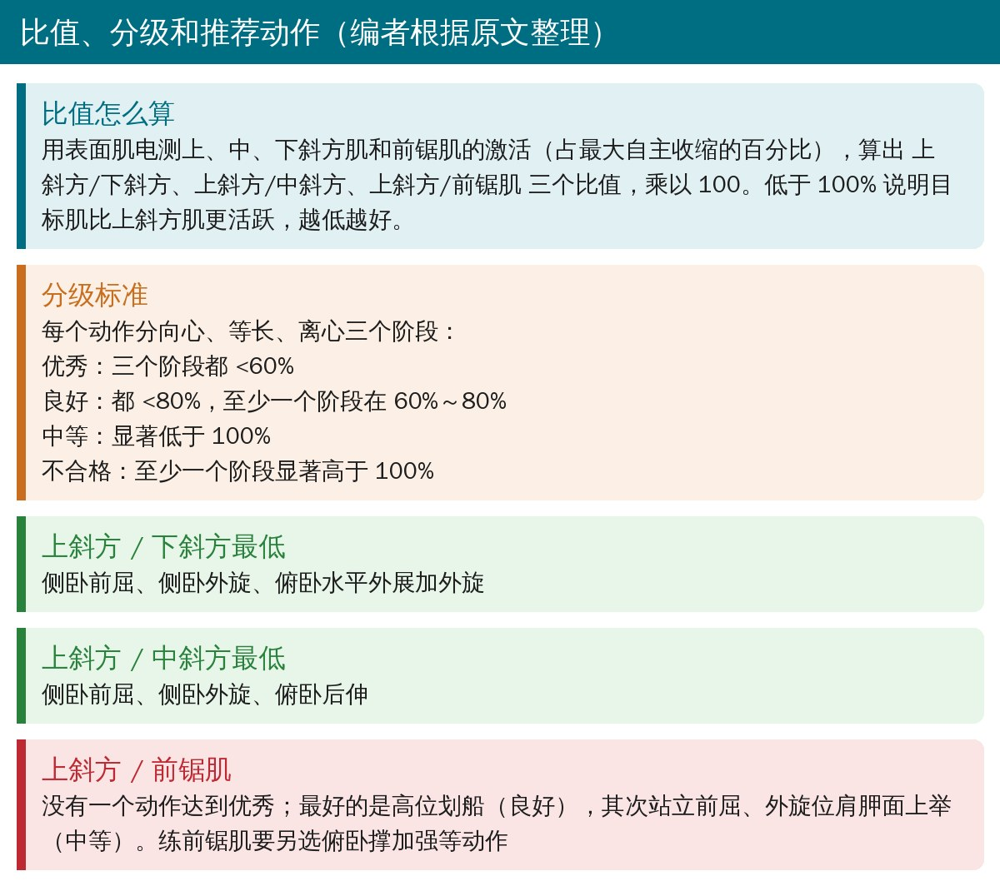
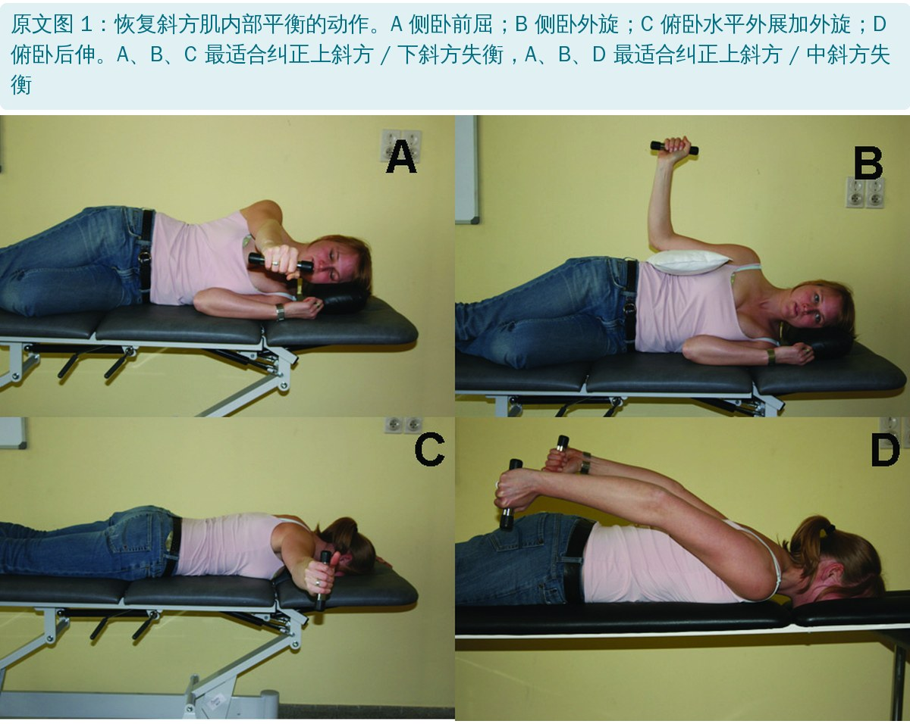
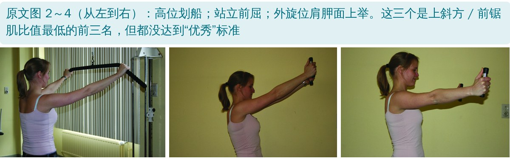

🔖原文信息（编者中文重排）
📚 文献信息
▪ Cools AM, Dewitte V, Lanszweert F, Notebaert D, Roets A, Soetens B, Cagnie B, Witvrouw EE. Rehabilitation of scapular muscle balance: which exercises to prescribe? Am J Sports Med. 2007;35(10):1744-1751. doi:10.1177/0363546507303560
▪ 作者来自比利时根特大学康复科学与物理治疗系，第一作者 Ann Cools 是肩胛康复领域的代表人物
▪ 研究类型：对照实验室研究（表面肌电），45 名健康大学生
肩痛、撞击、肩袖问题和不稳的患者，常见上斜方肌过度激活，同时下斜方肌、中斜方肌和前锯肌控制不足。这时单纯“加强肩胛肌”不够，关键是让弱的部分多出力，同时让上斜方肌少出力。
以往的肌电研究多只报告单块肌肉激活高不高，只有 Ludewig 用比值研究过俯卧撑系列的上斜方 / 前锯肌。这项研究第一次计算了 12 个常用动作的上斜方/下斜方、上斜方/中斜方、上斜方/前锯肌三个比值。
| 动作 | 上斜方肌 | 中斜方肌 | 下斜方肌 | 文献 |
|---|---|---|---|---|
| 外展 | ✓ | ✓ | ✓ | 22、35 |
| 前屈 | ✓ | ✓ | 22、34、35、39 | |
| 动态拥抱 | ✓ | 7、12、39 | ||
| 外旋 | ✓ | 2 | ||
| 后伸 | ✓ | ✓ | 7、22、35 | |
| 水平外展（中立位或外旋位） | ✓ | ✓ | ✓ | 7、22、35 |
| 推举 | ✓ | 17、35 | ||
| 划船（低位或高位） | ✓ | ✓ | ✓ | 17、20、35 |
| 肩胛面上举（中立位或外旋位） | ✓ | ✓ | ✓ | 2、12、22、35 |
| 肩胛后缩 | ✓ | ✓ | 7、22 | |
| 耸肩 | ✓ | 12、22 |
原文表 1：既往文献中常用于斜方肌训练的动作（中文翻译；✓ 表示文献认为对该部分有效）
• 受试者：45 名健康大学生（男 20、女 25，平均 20.7 岁），排除颈肩伤病史、竞技过头运动和每周力量训练超过 5 小时者
• 测量：表面肌电贴在优势侧上、中、下斜方肌和前锯肌下部；先做徒手肌力测试体位的最大自主收缩作为 100% 参照
• 动作：12 个常用动作随机顺序，每个动作向心 3 秒、等长保持 3 秒、离心 3 秒，节拍器控节奏，做 5 次取中间 3 次；负荷按性别和体重分组给定
• 比值：上斜方肌激活 ÷ 目标肌激活 × 100%。低于 100% 表示目标肌更活跃，越低越好
| 动作 | 器械 | 做法 |
|---|---|---|
| 俯卧肩外展 | 哑铃 | 俯卧，肩中立位起始，在水平面内外展到 90° 并外旋 |
| 前屈 | 哑铃 | 站立，肩中立位起始，在矢状面最大前屈 |
| 侧卧前屈 | 哑铃 | 侧卧，肩中立位起始，在水平面内前屈到 135° |
| 高位划船 | 竖直滑轮、V 形把手 | 面对滑轮站立，肩前屈 135° 起始，后伸到中立位 |
| 水平外展 | 哑铃 | 俯卧，肩前屈 90° 垂于床边，水平外展到水平位 |
| 水平外展加外旋 | 哑铃 | 同上，到水平位后再加肩外旋 |
| 低位划船（1） | 滑轮、双把手 | 面对滑轮站立，肩前屈 45°、中立旋转，伸肘位后伸 |
| 低位划船（2） | 滑轮、双把手 | 同上，屈肘位后伸 |
| 俯卧后伸 | 哑铃 | 俯卧，肩前屈 90° 垂于床边，在中立旋转位后伸到中立位 |
| 坐位划船 | 滑轮、双把手 | 坐在滑轮前，肩前屈 90°，屈肘在水平面内后伸 |
| 外旋位肩胛面上举 | 哑铃 | 坐位，手臂垂于体侧，在肩胛面（额状面前 30°）最大上举 |
| 侧卧外旋 | 哑铃 | 侧卧，肩中立、屈肘 90°，做肩外旋（肘与躯干间夹毛巾，避免代偿） |
原文表 2：研究中 12 个动作的说明（中文翻译）

🔖比值、分级和推荐动作

🔖原文图 1：恢复斜方肌内部平衡的四个动作
• 练下斜方肌、少用上斜方肌：侧卧外旋、侧卧前屈、俯卧水平外展加外旋
• 练中斜方肌、少用上斜方肌：侧卧外旋、侧卧前屈、俯卧后伸
• 侧卧外旋和侧卧前屈两个都入选，适合下斜方和中斜方都弱的人（如有撞击症状的过头运动员）
• 等长保持阶段比值最低：侧卧的两个动作在末端停住时最好，所以要强调全程控制、在最大外旋或前屈 135° 处“停一下”
• 俯卧水平外展末端加外旋很关键，加了外旋才进入前三名
• 划船类动作（坐位、低位、高位）都没入选上斜方 / 下斜方前三名，虽然临床常用来练下斜方肌，但下斜方激活其实偏低，比值也不占优
• 站立前屈不适合上斜方 / 下斜方失衡的人，上斜方肌太活跃
• 站立位后伸（高位、低位划船）也不如俯卧后伸；体位明显影响各部分的激活比例，可能因为侧卧、俯卧消除了上斜方肌的抗重力姿势作用

🔖原文图 2～4：上斜方 / 前锯肌比值最低的三个动作
没有一个动作达到优秀标准。比值从高位划船等长阶段的 50.51% 到水平外展加外旋等长阶段的 467.60%，远不如 Ludewig 研究中的俯卧撑系列（多数阶段低于 30%）。原因是这 12 个动作本来就是为斜方肌挑的，练前锯肌请另选俯卧撑加强等动作。
• 受试者都是年轻健康人：作者也承认，结果能否推到肩痛患者或其他年龄段要谨慎
• 具体数值不在正文：各动作的肌电值、比值和分级检验都放在在线附录，正文只给出结论
• 表面肌电的局限：动态动作中皮肤移位、串扰、归一化方法都会影响结果；也没有同步记录运动学
• 入选动作都是卧位：难以融入功能性动力链训练，作者建议只用于康复早期，之后再过渡到功能性动作
• 只测了四块肌肉，菱形肌、胸小肌等其他肩胛肌没有测
• 自由度不可能大于 2：时相（向心、等长、离心）只有 3 个水平，校正后的分子自由度最多为 2，但上斜方 / 中斜方的时相主效应报告为 F(2.88, 138.25)；分母自由度换算也对不上 44（138.25÷2.88≈48）
• 分级定义重叠：第 3 类写成“显著低于 100%，至少一个阶段在 60%～80%”，与第 2 类重叠，按逻辑应是至少一个阶段在 80%～100%
• 前锯肌结论说法不一：结果说高位划船达到了第 2 类（良好），摘要和讨论却说“没有动作达到标准”
• P 值表述：F 值高达 16～37 时报告“P = .001”，按惯例应写 P < .001
• 小错：共模抑制比（common mode rejection ratio）写成“common rate rejection ratio”；“信噪比 <1 µV”的说法也不规范（应为基线噪声）
• 先判断哪部分弱、哪部分过度活跃，再按比值挑动作，而不是笼统地“练肩胛”
• 早期首选卧位：侧卧外旋、侧卧前屈、俯卧水平外展加外旋、俯卧后伸
• 每个动作都要在末端停住，慢速向心 3 秒、保持 3 秒、离心 3 秒
• 划船和站立前屈别当首选：对上斜方过度激活的人可能适得其反
• 前锯肌另外练，再逐步过渡到站立、对角线和全身动力链的功能性训练
欢迎关注悦美力公众号，获取更多物理治疗的专业知识！
📄参考文献：
Cools AM, Dewitte V, Lanszweert F, et al. Rehabilitation of scapular muscle balance: which exercises to prescribe? Am J Sports Med. 2007;35(10):1744-1751. doi:10.1177/0363546507303560
原文版权：© 2007 美国骨科运动医学学会（AOSSM），由 SAGE 出版，未采用开放许可协议。本文为学术交流用的中文解读：原文图 1～4 照片直接引用并加中文图注，表 1、2 为中文翻译，比值分级卡为编者整理。版权归原作者与期刊，如有侵权请联系删除。